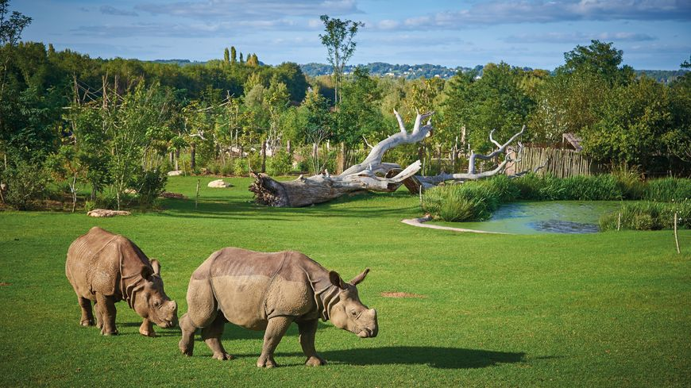

Inter has ruinarum varietates a Nisibi quam tuebatur accitus Vrsicinus, cui nos obsecuturos iunxerat imperiale praeceptum, dispicere litis exitialis certamina cogebatur abnuens et reclamans, adulatorum oblatrantibus turmis, bellicosus sane milesque semper et militum ductor sed forensibus iurgiis longe discretus, qui metu sui discriminis anxius cum accusatores quaesitoresque subditivos sibi consociatos ex isdem foveis cerneret emergentes, quae clam palamve agitabantur, occultis Constantium litteris edocebat inplorans subsidia, quorum metu tumor notissimus Caesaris exhalaret.
Pandente itaque viam fatorum sorte tristissima, qua praestitutum erat eum vita et imperio spoliari, itineribus interiectis permutatione iumentorum emensis venit Petobionem oppidum Noricorum, ubi reseratae sunt insidiarum latebrae omnes, et Barbatio repente apparuit comes, qui sub eo domesticis praefuit, cum Apodemio agente in rebus milites ducens, quos beneficiis suis oppigneratos elegerat imperator certus nec praemiis nec miseratione ulla posse deflecti Pandente itaque viam fatorum sorte tristissima, qua praestitutum erat eum vita et imperio spoliari, itineribus interiectis permutatione iumentorum emensis venit Petobionem oppidum Noricorum, ubi reseratae sunt insidiarum latebrae